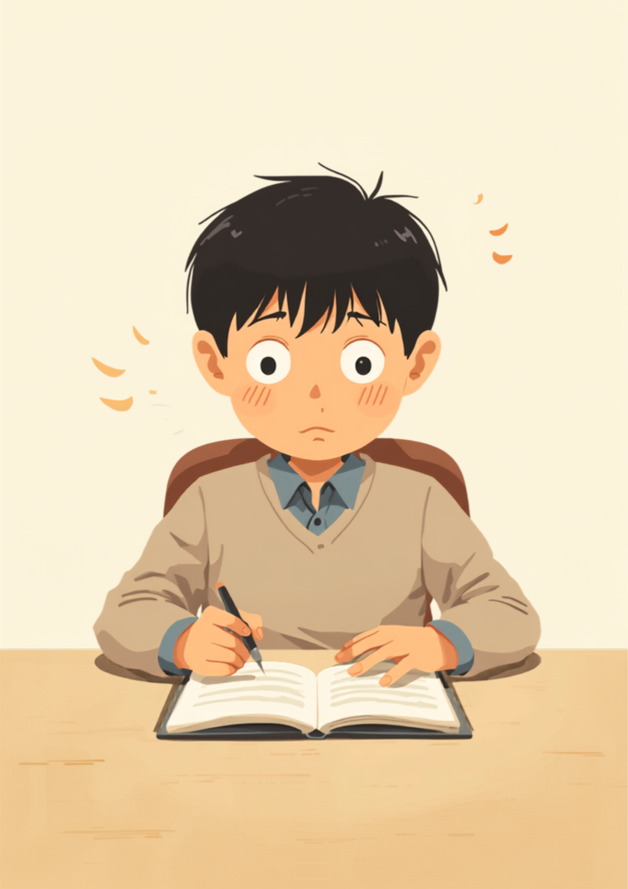
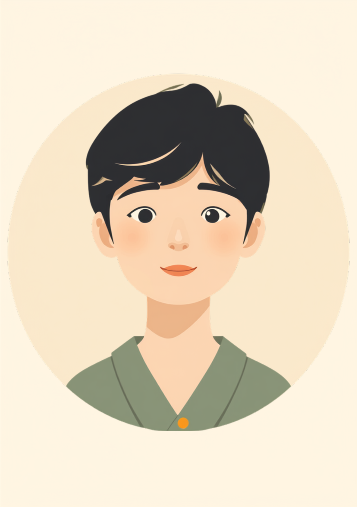

チャットに届いたその一文だけで、頭の中が真っ白になったことはないだろうか。予定が1時間ずれただけなのに、その日一日がまるごと動かなくなってしまう。就労移行支援の面談で、この感覚を言葉にできずに苦しんでいる方に何度も出会ってきた。今日はその「動けなくなる」の中身を、一緒にほどいていきたい。

「え、今?」の一言で、頭の中が真っ白になる
就労移行支援の現場で、ある相談者がこんなことを話してくれた。「会議が30分早まっただけなのに、その日はもう仕事にならなかった」と。本人も「大げさだと分かってるんです」と繰り返していたが、その「分かっているのに止まらない」という感覚こそが、ASD(自閉スペクトラム症)のある方が予定変更のときに抱えやすい感覚のようだ。
たった1時間のズレが、その日をまるごと使えなくすることがある。
頭の中で組み立てていた順番が、突然崩れる。
次に何をすればいいのか分からなくなる。
分かっているのに、体が動かない。
この一連の反応は、性格の問題や気合の足りなさとして片づけられがちだが、決してそうではないという声が支援の現場でもよく聞かれる。むしろ、先の見通しを細かく組み立てて動く力が強いからこそ、その見通しが崩れたときの衝撃も大きくなりやすいという捉え方をされることが多い。
「会議が30分早まっただけで、その日一日ずっと変な感じでした。正直に言うと、頭の中で『さっきまでの予定』がずっと再生され続けてる感じで、目の前の仕事が全然入ってこなくて。上司には『気持ち切り替えるの早くしろよ』って半分笑いながら言われたことがあって、それが地味にきつかったです。今は変更があったらまず5分だけトイレに行かせてもらうようにしていて、それだけでだいぶ違います。」

予定はなぜ「線」になっているのか、崩れると何が起きるのか
ASD(自閉スペクトラム症)のある方の中には、1日の予定を頭の中で1本の線のようにつなげて把握している方が多いと言われている。「この時間にこれをして、次にこれをして」という順番そのものが、安心して動くための土台になっている、という捉え方もできる。土台の一部が急に差し替わると、そこから先の見通しがすべて崩れてしまう感覚になりやすいようだ。
予定変更のきっかけになりやすい場面には、たとえばこんなものがある。
・会議の時間が変わる
・担当者が急に変わる
・作業の手順が途中で変わる
・移動のルートや交通機関が変わる
どれも、変更を伝える側にとっては「ちょっとした調整」に過ぎない。だが受け取る側にとっては、崩れた土台の上でもう一度組み立て直す作業を、その場でいきなり求められることになる。
ここで大事なのは、崩れた土台をその場で完璧に組み立て直す必要はないということだ。まずは連鎖を途中で止める。それだけでも、動けなくなる時間を短くできる場合がある。
「入社してすぐの頃、月曜の朝礼が急に金曜に変更になったことがあって。正直、その日は一日中そわそわしてて、ミスも3件くらい重ねました。『たかが朝礼でしょ』って自分でも思うんですけど、頭ではそう思っても体がついてこないというか。半年経った今も完全には慣れないですが、変更の連絡だけは前日までにもらえるよう人事にお願いして、少し楽になりました。」
職場でできる備え、変更に強くなるための小さな仕組み
その場でできること
予定変更に気づいた瞬間、無理にその場で切り替えようとしなくていい。まず情報を一度遮断する。可能であれば席を立ち、数分だけ一人になる時間を作る。それから「何が変わったのか」「次に何をすればいいのか」を紙に書き出す。頭の中だけで処理しようとするより、視覚的に整理したほうが状況をつかみやすくなるという声がある。
職場に伝えるときの言葉の例
特性の仕組みまで詳しく説明する必要はない。業務に関わる具体的な対処法として伝える方が、双方にとって負担が少ないとされている。
- 「予定が変わると、切り替えに少し時間がかかることがあります」
- 「変更が決まったら、できるだけ早く共有していただけると助かります」
- 「変更直後の数分だけ、一人で整理する時間をもらえると動きやすくなります」
- 「その間は声をかけず、少し待っていただけると安心です」
就職活動の段階から、変更が苦手だと伝えておくことで、入社後の情報共有の仕方を調整してもらいやすくなったという方もいる。反対に、伝えないまま働き続けて誤解が積み重なり、あとから伝え直すのに苦労したという声も聞かれる。どちらのタイミングでも遅すぎるということはない。
使える配慮と、一人で抱えないための相談先
手帳という選択肢
ASD(自閉スペクトラム症)は、精神障害者保健福祉手帳の対象となる場合がある。等級は日常生活や仕事への影響の程度によって異なるため、詳しくは主治医や自治体の障害福祉窓口に確認するのが確実だ（2026年9月時点の情報である）。手帳を取得すると、障害者雇用枠での就職や、企業側との合理的配慮の相談がしやすくなる場合がある。
合理的配慮という、手帳がなくても使える仕組み
合理的配慮は、手帳を持っていない場合でも相談できる仕組みとされている。「変更の連絡を早めにしてほしい」「変更直後は少し時間がほしい」といった具体的な内容であれば、企業側も対応を検討しやすいという声がある。
相談できる窓口
- 主治医・かかりつけの精神科／心療内科（特性の整理や、意見書の相談）
- 職場の産業医（50人以上の事業場に選任義務あり）
- 自治体の障害福祉窓口、精神障害者保健福祉手帳の相談窓口
- 就労移行支援事業所（働き方の相談や職場との調整）
よくある質問
関連記事
この記事に、聞いてみたいことはありますか？
「自分の場合はどうなんだろう」と思ったことを、気軽に書いてみてください。いただいた質問は個別にお返事したうえで、匿名で記事にすることがあります。
mimemime代表。就労支援の現場経験をもとに、障がいのある方の働く不安に寄り添う記事を執筆。